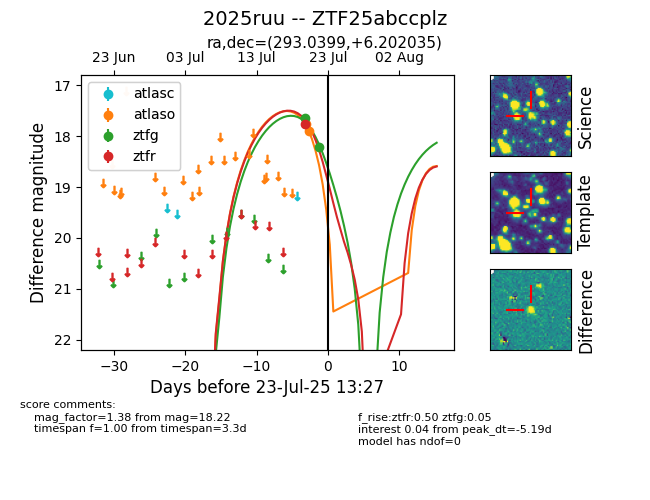

Target ZTF25abccplz at 2025-07-23 13:27, see:
FINK: fink-portal.org/ZTF25abccplz
Lasair: lasair-ztf.lsst.ac.uk/objects/ZTF25abccplz
ALeRCE: alerce.online/object/ZTF25abccplz
TNS: wis-tns.org/object/2025ruu
YSE: ziggy.ucolick.org/yse/transient_detail/2025ruu
alt names
ZTF25abccplz (ztf,fink)
2025ruu (tns,yse)
coordinates:
equatorial (ra, dec) = (293.0399,+6.20204)
galactic (l, b) = (43.1440,-6.14938)
photometry
last atlaso=17.89, ztfg=18.22, ztfr=17.77
2 atlaso, 2 ztfg, 1 ztfr detections
